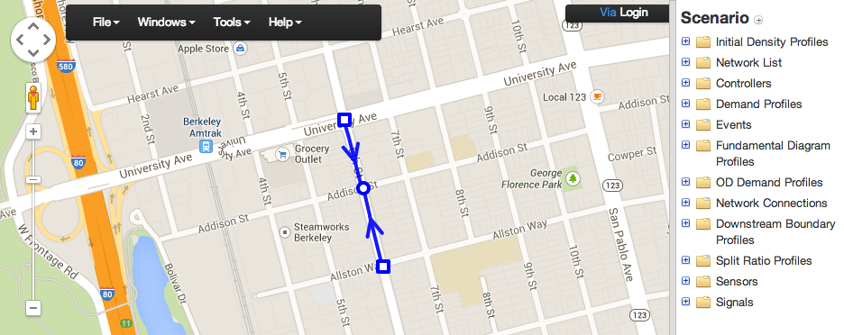

| date: | 2014-08-14 16:30 |
|---|---|
| tags: | pointq, simulator |
| author: | Martin Gouy |
The goal of this section is to present the different methods available to generate the configuration files needed to run the simulation.
The list of the different files needed by the simulation is the following:
The specification of each of these files is available in the LaTex documentation available in the Github page of the project.
This method consist in representing the network thanks to an XML file, and then extract the info from the XML with a python program to create most of the required configuration files (some still need to be filled by hand).
You can use this Scenario Editor to create your network and export it to XML.
The minimal structure of the XML should be the following:
<NetworkSet>
<network>
<NodeList>
<node id="10001" in_sync="false" node_name="Huntington Dr & 210 WB Off-Ramp">
<outputs>
<output link_id="100054"/>
<output link_id="200037"/>
<output link_id="200053"/>
</outputs>
<inputs>
<input link_id="100037"/>
<input link_id="100053"/>
<input link_id="200054"/>
</inputs>
<position>
<point elevation="0" lat="34.1402560877304" lng="-118.016007095575"/>
</position>
</node>
</NodeList>
<LinkList>
<link id="10002" in_sync="true" lane_offset="0" lanes="2" length="49.0728">
<begin node_id="100016"/>
<end node_id="10002"/>
<position>
<point elevation="0" lat="34.1402927661392" lng="-118.01804959774"/>
<point elevation="0" lat="34.14027" lng="-118.01873"/>
<point elevation="0" lat="34.14022" lng="-118.01873"/>
<point elevation="0" lat="34.140220557247" lng="-118.018722832203"/>
</position>
<shape>u_koEnpioU?b@@rC</shape>
</link>
</LinkList>
</network>
</NetworkSet>
How to proceed:
Put your xml in the same folder than “network_configuration.py” located in the XML_TOOLS folder (cf Github of the project).
Note: some of the configuration files are not generated automatically by this program. You will have to fill them by hand.
Fill the uncompleted spreadsheets by hand.
Export the spreadsheets with excel to .txt with tabulations format .
Note: You should always compare the structure of your configuration files with some that were already built and are correct. You can find some in the SMALL_NETWS folder.
This method should only be used for very small networks. It’s a very painful method which will probably produce a lot of errors and make you loose some time to debug the mistakes.